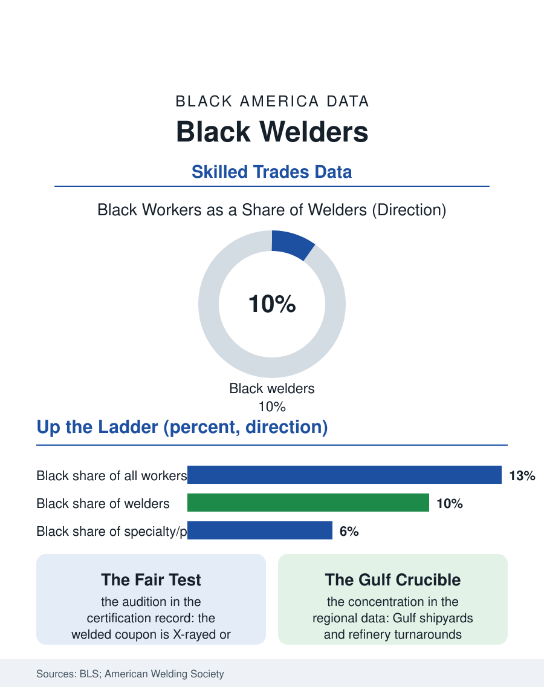

Black Employment
The Fair Test: Black Welders
Welding certifies skill by breaking the evidence, the fairest audition in the trades, and Black welders hold about a tenth of the work, concentrated on the Gulf. The welder file.

Welding is the connective tissue of heavy industry, shipyards, pipelines, refineries, rail shops, and the structural steel of every skyline in this atlas, and welders are paid for a skill that is tested, certified, and visibly pass or fail. Black workers hold roughly nine or ten of every hundred welding jobs in the federal counts, with strength in the Gulf Coast's shipbuilding and energy corridor and the rail and steel shops of the Midwest. This article reads the welder file.
Certification Without Mystery
Welding's credentialing is the trades section's most transparent: the American Welding Society's certifications are performance tests, a welded coupon X-rayed or bent to destruction, a standard that either holds or does not. That transparency shapes the occupation's demographics at the margins the data can see: where hiring runs on certified skill demonstrated on the spot, the welder's audition, Black welders report in the workforce literature fewer of the network barriers that govern the referral trades, and employers in shortage regions recruit directly from the welding programs of community colleges and trade schools whose enrollment is substantially Black in the Gulf and southern metros. The occupation's internal ladder is steep and legible: production welders on the line, structural and pipe welders at a premium, and at the summit the pipeline and specialty welders whose day rates the industry press quotes like athletes' salaries, traveling crews following shutdowns and turnarounds from refinery to refinery. Black welders are present at every level and thinnest, as usual, at the summit, where the traveling crews recruit through the tightest networks in the industry and where the per-diem economy rewards exactly the mobility that family-stage workers cannot always supply. The union map matters here too: the boilermakers, pipefitters, and ironworkers each claim jurisdiction over slices of the weld, and their locals' integration histories differ enough to show up in the regional data.
The Gulf Coast Crucible
Geography concentrates this file like no other in the trades section. The shipyards of the Gulf, Pascagoula, Mobile, Newport News up the coast, employ welders by the thousand, and their workforces, drawing on the Black Belt's coastal counties, are among the most integrated heavy workforces in America, a fact visible in the employment data of the shipbuilding metros throughout this atlas's city files. The energy corridor's turnaround economy, the scheduled refinery shutdowns that import hundreds of welders for six-week sprints at premium pay, is a Black working-class institution in its own right across Louisiana and Texas, with its own recruiting circuits, its own RV-park geography, and its own ladder from helper to journeyman that runs outside the apprenticeship systems entirely. The occupational health file is heavy: welding fumes, manganese exposure, eye and burn injuries, and the respiratory data that have tightened ventilation rules across the industry, exposures borne disproportionately by the production tiers where Black welders cluster. The military pipeline feeds the trade continuously, Navy and Coast Guard welders separating into the shipyards that built their ships, and the veterans' preference in those yards' hiring is another of the file's quiet demographic engines.
Automation's Edge and the Human Weld
Robotic welding owns the repetitive factory seam, and has for decades; the file's forward question is how far automation climbs into the field welds, the pipe joints in mud and weather, the repair work on fifty-year-old structures, where the human welder's judgment remains the product. The occupational projections hold field and specialty welding steady while production welding thins, which reprices the ladder: the certified, mobile, multi-process welder gains; the single-process production hand is exposed. Training programs have read the repricing: the strongest community college programs now certify across processes and inspect, robotic cell operation included, preparing students to supervise the machines as well as compete with them. Infrastructure spending, bridges, water systems, grid hardware, and the shipbuilding ramp of the naval build-up all draw on the certified pool, and the Navy's supplier workforce initiatives have named welding a strategic trade with funded training attached, pipelines that run through the same Gulf and Hampton Roads metros where Black welders already concentrate. The welder file closes at the test booth, where the coupon either passes or it does not. It is the fairest audition in the trades, and the file's data suggest the occupation's Black share rises wherever the audition governs and falls wherever the phone call does, a one-sentence summary, in the end, of the entire employment section of this atlas.
More in Black Employment
The Black Unemployment Rate: The Two-to-One Pattern
Black unemployment runs at roughly twice the White rate — 5.5 percent against 3.3 percent in annual averages — a ratio stable across five decades of federal data. How it is measured and why it persists.
Black Median Weekly Earnings: The 80-Cent Ratio
Black full-time workers earn a median of about $900 a week — roughly 80 cents for every dollar White workers earn. The BLS earnings data by group, gender, and occupation.
Black Labor Force Participation: Working at National Rates
Black labor force participation runs at roughly the national rate — and Black women participate at higher rates than White women. The BLS participation data.
Source: U.S. Bureau of Labor Statistics, Current Population Survey; American Welding Society workforce reports; shipbuilding industry employment data.